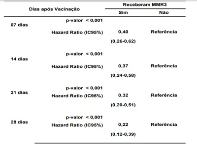

Questão 1 · Imunização ativa · Vacinas · Esquema vacinal · 4000124833Adolescente saudável, 12 anos, residente no Rio de Janeiro, com relato de nunca ter saído do Estado, é levado por sua mãe à Unidade de Saúde para avaliação da adequação da sua caderneta vacinal. Considerando que a última dose de vacina recebida por ele foi aos seis anos de idade e que, na ocasião, estava em dia com a vacinação rotineira para sua faixa etária, as vacinas a serem recomendadas para atualização da sua caderneta, de acordo com o preconizado pelo Ministério da Saúde para sua idade atual, são:
A HPV (1 dose), Vacina Meningocócica C Conjugada (1 dose) e vacina dTpa (1 dose).
B HPV (2 doses), Vacina Meningocócica C Conjugada (1 dose) e Vacina Febre Amarela (1dose).
C HPV (1 dose), Vacina Meningocócica C Conjugada (2 doses) e Vacina Febre Amarela (1dose).
D HPV (2 doses), Vacina Meningocócica C Conjugada (1 dose) e vacina dTpa (1 dose).
E HPV (2 doses), Vacina dTpa (1 dose) e Vacina Febre Amarela (1 dose).
Questão 2 · Bronquiolite · 4000124831A Bronquiolite viral aguda (BVA) é a infecção do trato respiratório inferior mais comum em lactentes. Em relação a essa doença, assinale a afirmativa correta.
A Os exames laboratoriais para confirmação do agente etiológico devem ser solicitados de rotina.
B Os corticosteroides sistêmicos são indicados em todos os casos de BVA.
C Na maioria dos pacientes a evolução é benigna e o tratamento está fundamentado em sintomáticos e orientações em relação aos sinais de gravidade.
D Os broncodilatadores beta-adrenérgicos são as medicações de primeira linha para os pacientes internados com BVA.
E São sinais de gravidade da BVA: tiragem subcostal, batimento de asa do nariz, gemência e saturação de oxigênio de 94%.
Questão 3 · Síndrome de Lof f ler · 4000124829As infecções por parasitas intestinais são comuns na faixa etária pediátrica e podem ter quadro clínico variável. A síndrome de Lö er é uma apresentação pulmonar que ocorre devido à passagem do parasita pelo pulmão do hospedeiro como parte do seu ciclo patogênico. Os parasitas que fazem ciclo pulmonar e podem desencadear sintomas respiratórios, como tosse e broncoespasmo no hospedeiro, são os seguintes:
A Taenia Solim e Enterobius vermiculares.
B Isospora Belly e Blastocystis hominis.
C Giardia Lamblia, Entamoeba histolytica e Balantidium coli.
D Ancylostoma duodenale, Necator americanus, Strongyloides stercoralis e Ascarislumbricoides.
E Entamoeba histolytica, Isospora Belly e Ascaris lumbricoides.
Questão 4 · Orientações gerais de puericultura Sinais de alerta · 4000124827Recém-nascido (RN), cinco dias, é levado pela avó e pela mãe para consulta. Elas relatam parto operatório, peso de nascimento 2.900g, a termo, Apgar 7 e 8, alta da maternidade com 48 horas de vida. Mãe relata ainda que está produzindo pouco leite e que RN está em regime de aleitamento materno exclusivo. O peso no dia da consulta é de 2.700g. Mãe também informa que ele evacua diversas vezes ao dia e urina em torno de seis a oito vezes. Diante desse quadro, a orientação a ser dada é:
A ensinar a mãe a técnica de ordenha e iniciar medicações para ela na tentativa de aumentar a produção do leite.
B iniciar hidratação oral complementar ao aleitamento, pois o paciente perdeu muito peso em relação ao nascimento.
C internar o RN para pesquisa de possível erro inato do metabolismo.
D iniciar reposição com fórmula tendo o cuidado de dar pelo copinho para preservar asucção.
E manter o aleitamento exclusivo e pelos dados expostos orientar que o RN está normal.
Questão 5 · Coarctação de aorta · 4000124824A ausência de pulso femural e presença de pulso radial vigoroso, possibilita levantar a hipótese de:
A coarctação da aorta.
B persistência do canal arterial.
C estenose pulmonar.
D estenose fisiológica de ramos pulmonares.
E comunicação interventricular.
Questão 6 · Hiperbilirrubinemia não f isiológica · 4000124822Recém-nato (RN) masculino, a termo, peso 3200g, com boa atividade, sugando o seio materno com avidez, apresenta icterícia em face e tórax com 16 horas de vida. Mãe: GII, PII, A0 grupo sanguíneo O fator Rh negativo, não tendo realizado Coombs indireto não no pré-natal. RN: grupo sanguíneo A fator Rh negativo, Coombs direto negativo. A principal hipótese diagnóstica para esse caso é de:
A sepse neonatal.
B icterícia patológica por incompatibilidade Rh.
C icterícia fisiológica do RN.
D icterícia patológica por incompatibilidade ABO.
E deficiência de glicose 6-fosfato desidrogenase.
Questão 7 · Plano B · 4000124821Menina, quatro anos, é levada à Emergência pelos pais com quadro de vômitos (duas vezes), febre (38°C) e diarreia aquosa (seis vezes), iniciado há 24 horas. Recusa alimentar, diurese diminuída e de cor amarela escura. Irmão com quadro semelhante, porém sem vômitos. Ao exame: estado geral regular, hipocorada (+/4+), mucosas secas, taquipneica (FR = 40irpm), taquicárdica (FC = 125bpm), sem rigidez de nuca, enchimento capilar de quatro segundos. Ausculta cardíaca e respiratória sem alterações. Abdome depressível, difusamente doloroso, mas sem sinais de irritação peritoneal. Peristalse aumentada, sem massas ou visceromegalias. Sobre a conduta terapêutica relacionada ao caso acima, indique a alternativa correta.
A É recomendado iniciar imediatamente antibioticoterapia de largo espectro.
B Como a criança não apresenta sinais de gravidade, deve-se orientar uso de SRO sob livre demanda e manutenção da dieta habitual.
C Pode-se administrar soro de re-hidratação oral (SRO) por sonda nasogástrica (de 15 a30ml/kg/hora, se houver tolerância) ou mesmo iniciar soroterapia venosa.
D Após 30 minutos de observação, pode-se liberar a criança para o domicílio.
E Deve-se prescrever antiemético fixo nas primeiras 48 horas de evolução do quadro.
Questão 8 · Quadro clínico da leucemia linf oide aguda LLA · Hematologia · 4000124818Pré-escolar, três anos, é atendido no ambulatório de pediatria geral com queixas de febre e dor nas pernas. A febre tem sido intermitente, tendo chegado a 38,6°C nos últimos cinco dias e a dor nas pernas o tem acordado à noite. As vacinas estão atualizadas e o paciente não tem comorbidades. Mãe relata que recentemente surgiram algumas manchas arroxeadas nos braços e pernas, porém, relaciona a trauma associado a atividades. Refere infecção viral prévia, há aproximadamente três semanas, com resolução espontânea. Sinais vitais: Tax. = 38,2°C, FC = 120 batimentos/minuto, FR = 24 irpm, PA = 100x60mmHg e saturação de oxigênio de 100% em ar ambiente. Adenomegalia cervical inexpressiva. Ausculta cardíaca e pulmonar sem alterações. Abdômen sem hepatoesplenomegalia. Presença de equimoses discretamente dolorosas em áreas expostas e não expostas. Exame neurológico sem alterações. Exames laboratoriais: 1.500 leucócitos/mm³ (5% de eosinó los, 5% neutró los, 85% linfócitos, 5% monócitos); hemoglobina = 8,5 g/dL, hematócrito = 24%, reticulócitos = 0,4%, plaquetas = 75.000/mm³. O diagnóstico mais provável para esse paciente é de:
A anemia aplástica.
B leucemia linfocítica aguda.
C leucemia linfocítica crônica.
D mononucleose infecciosa.
E imunossupressão pós-viral.
Questão 9 · Glomerulonef rite pósestreptocócica · Síndrome nef rítica · 4000124816Escolar, sete anos, é levado ao consultório pelos pais com início agudo de urina de cor amarronzada, mal-estar inespecí co e edema periorbitário. O paciente é previamente hígido, sem dados relevantes na história familiar. A pressão arterial é de 135x80mmHg, não apresentando outras alterações no exame físico. Os pais apresentam exames laboratoriais com os seguintes resultados: sódio = 140mEq/L; potássio = 4,0mEq/L; creatinina = 0,4mg/dL. EAS com densidade urinária = 1.010; pH = 6,0; hemácias = 3+, proteínas = 1+, com > 100 hemácias por campo e presença de cilindros hemáticos. Dentre as alternativas a seguir, a próxima etapa mais apropriada no diagnóstico desse paciente é:
A coleta de urina de 24 horas para quantificação da proteinúria.
B biópsia renal.
C dosagem de complemento (C3, C4 e CH50).
D teste genético para doença renal.
E nível de imunoglobulina A sérica.
Revisar: possível letra faltando em enunciado
Questão 10 · Mononucleose · Etiologia e Epidemiologia · Diagnóstico · 4000124814Adolescente feminina, 15 anos, chega ao consultório médico com odinofagia, fadiga e febre persistente há cinco dias. Nos últimos dois dias, ela notou piora da fadiga e surgimento de adenomegalias cervicais. No exame físico, aparenta estar doente e cansada, Tax. = 38,5°C, FR = 18irpm e FC = 80bpm. Nota-se aumento e hiperemia das amígdalas associada a presença de exsudato esbranquiçado. Na região cervical, apresenta múltiplos linfonodos na cadeia posterior, variando de 0,5 a 1,5cm de diâmetro, sendo algo dolorosos. O couro cabeludo não tem lesões. Ausculta cardíaca e pulmonar sem alterações. O baço é palpável 2cm abaixo margem costal esquerda e o fígado não é palpável. Exames laboratoriais: 15.000 leucócitos/mm³ (2% bastões; 25% neutró los; 50% de linfócitos, sendo 18% com características atípicas e 5% monócitos); hemoglobina = 13g/dL; hematócrito = 42%; volume corpuscular médio = 84 alanina aminotransferase = 100U/L (intervalo de referência = 7-56U/L); aspartato aminotransferase = 80U/L (intervalo de referência = 10-40U/L); bilirrubina total = 1,5mg/dL. Com esse quadro, o diagnóstico mais provável para essa paciente é:
A micobacteriose atípica.
B infecção pelo vírus Epstein-Barr.
C doença da arranhadura do gato.
D leucemia linfocítica aguda.
E faringite estreptocócica.
Questão 11 · Quadro clínico e Diagnóstico · Abordagem da Crise Febril · Risco de Recorrência e de Epilepsia · 4000124812Sobre convulsão febril (CF) na infância, indique a alternativa incorreta.
A O risco de um novo episódio convulsivo durante o mesmo quadro febril é raro, embora possa ocorrer.
B O diagnóstico de CF na infância é essencialmente clínico, tornando fundamentais aanamnese detalhada e o exame físico minucioso.
C Crianças com CF têm risco discretamente aumentado para crises focais complexas, da mesma forma que outros tipos de epilepsia, quando comparadas com a população geral.
D Nos casos em que a criança está em convulsão, o tratamento agudo é igual a qualquer crise epiléptica, independentemente de sua etiologia.
E A CF simples tem apresentação generalizada, duração inferior a 30 minutos e não recorre em menos de 24 horas.
Questão 12 · Queimaduras e Trauma Elétrico · 4000124810A incidência de queimaduras diminuiu nas últimas décadas, em virtude das medidas de prevenção. Crianças de até cinco anos pertencem ao grupo de maior risco, sendo os incêndios a principal causa de morte relacionada a queimaduras em crianças. Dentre as alternativas a seguir, indique aquela que está incorreta.
A Se o paciente tiver recebido uma ou nenhuma dose da vacina antitetânica, aplicarimunoglobulina antitetânica e imunização antitetânica seriada.
B Recomenda-se hospitalização das crianças com queimaduras elétricas/químicas e com queimaduras de 2º grau, que acometa mais de 10% da superfície corpórea.
C Queimaduras por cigarro, queimaduras com líquido escaldante e imersão (limites bem definidos na extremidade) sugerem lesões intencionais e devem ser notificadas.
D Nas queimaduras químicas extensas, deve-se remover a substância e irrigar com grande quantidade de água gelada por pelo menos 30 minutos.
E Deve-se instituir acesso venoso e ressuscitação hídrica em superfície corpórea queimada (SCQ) maior de 15% ou menos em casos com evidências de inalação de fumaça.
Questão 13 · Diagnóstico · 4000124807Todos as alternativas a seguir apresentam elementos para diagnóstico da rinossinusite alérgica, exceto:
A prurido e obstrução nasal.
B reações mediadas por IgE.
C necessidade de confirmação radiológica.
D espirros em salva.
E rinorreia não purulenta.
Questão 14 · Pediatria · Constipação f uncional · 4000124805Sabendo-se que o diagnóstico de constipação intestinal é clínico, assinale um importante sinal de alerta para crianças que apresentam esse problema.
A Déficit de crescimento
B Vômitos claros
C Presença do reflexo cremastérico
D Eliminação meconial precoce
E Abdome escavado
Questão 15 · Toxoplasmose na gestação · Obstetrícia · 4000124799A toxoplasmose congênita é uma doença evitável se os cuidados com a gestante, a interpretação dos exames durante o pré-natal e a indicação do tratamento forem corretos. Nesse contexto, é um erro afirmar que:
A a transmissão vertical em gestante com infecção crônica é improvável, exceto se ela for imunodeprimida.
B a espiramicina é medicação para a profilaxia da toxoplasmose congênita.
C se a IgG e a IgM forem positivas para toxoplasmose e resultado de teste de avidez for baixo durante a gravidez, significa que a gestante tem infecção recente e o tratamento para toxoplasmose deve ser iniciado imediatamente.
D havendo soro conversão durante a gravidez, é indicada a pesquisa de DNA dotoxoplasma pela técnica de PCR em líquido amniótico para investigar infecção fetal.
E se a IgG e a IgM forem negativas para toxoplasmose no primeiro trimestre de gestação, o feto não será infectado e não está indicado o tratamento da gestante.
Questão 16 · Transmissão vertical do HIV · 4000124796Sobre as crianças expostas ao HIV, é correto afirmar que:
A nos primeiros seis meses de vida, não devem receber as vacinas oferecidas pelo PNI, mas sim imunológicos especiais no Centro de Referência.
B o Ministério de Saúde do Brasil recomenda que a coleta da primeira carga viral seja feita na segunda semana de vida do recém- nascido.
C deve-se iniciar a profilaxia para pneumonia por Pneumocystis jiroveci com o uso desulfametoxazol + trimetoprim três vezes por semana se a contagem de linfócitos CD4 estiver abaixo de 15%.
D as não infectadas tendem a apresentar mais infecções bacterianas e quadros mais graves se comparadas a crianças não expostas ao HIV.
E para o diagnóstico de infecção pelo HIV, a recomendação é que o teste anti-HIV seja feito entre o 6º e o 12º mês de vida.
Questão 17 · Situações em que há restrições ao aleitamento materno · 4000124792No Brasil, o aleitamento materno está contraindicado a m de evitar a transmissão vertical, no recém-nascido a termo, de infecções causadas pelos seguintes agentes:
A HIV e HTLV1-2.
B vírus da hepatite B e HIV.
C vírus da hepatite C, HIV e HTLV1-2.
D vírus das hepatites B e C, HIV e CMV.
E HIV e CMV.
Questão 18 · Síndrome Hemolítico Urêmica SHU · Pediatria · 4000124790Pré-escolar, três anos, inicia quadro de diarreia há seis dias e evolui hoje com vômitos e irritabilidade importante. É levado a um Serviço de Emergência onde realiza exames complementares com os resultados a seguir: hemograma: Hb = 7,0g/dL; hematócrito = 22%; leucócitos = 18.000mm³ (neutró los = 45% e linfócitos = 52%); plaquetas = 95.000 mm³ ; ureia = 65mg/dL; creatinina = 0,9mg/dL; Na+ = 143mEq/L; e K+= 4,8mEq/L. O diagnóstico provável e o tratamento correto são, respectivamente:
A púrpura de Henoch-Schonlein, tratamento de suporte.
B gastroenterocolite aguda, tratamento de suporte.
C síndrome hemolítica urêmica, tratamento de suporte.
D síndrome hemolítica urêmica, tratamento com antibioticoterapia.
E gastroenterocolite aguda, tratamento com antibioticoterapia.
Questão 19 · Diagnóstico · Tratamento · 4000124788Jovem, 16 anos, nuligesta, sexualmente ativa, admitida com dor hipogástrica intensa, há menos de 24 horas, acompanhada de febre não aferida e vômitos. Relata ter notado, há uma semana, presença de corrimento vaginal branco amarelado e dispareunia. Não lembra a data da última menstruação. Apresenta dor à palpação bimanual do útero e à sua mobilização, com anexos livres. Exame especular sem alterações. Ultrassonogra a transvaginal mostra evidência de grande quantidade de líquido livre na pelve. Para esse caso, a principal hipótese diagnóstica e a melhor conduta são, respectivamente:
A gestação ectópica rota / internação hospitalar, solicitação de
B doença inflamatória pélvica / internação hospitalar, solicitação de
C apendicite / internação hospitalar, solicitar
D torção de cisto anexial / internação hospitalar, solicitação de
E gestação ectópica / internação hospitalar e solicitação de
Questão 20 · Quadro clínico · 4000124779Mulher, 27 anos, G0P0, é encaminhada ao serviço de ginecologia do HUAP com queixas de cólicas menstruais intensas que vem aumentando nos últimos dois anos, associada a dispareunia. Casada há cinco anos, nega uso de anticoncepcionais há três anos. Nega comorbidades, uso de medicamentos, cirurgias prévias e alergias. Apresenta ultrassonogra a transvaginal e preventivo dos últimos três meses, sem alterações. Sobre a principal hipótese diagnóstica, pode-se afirmar que:
A a cirurgia para lise de aderências e retirada de possível massa ovariana soluciona definitivamente os sintomas de dor e infertilidade.
B a dismenorreia acíclica intensa pode não responder aos anti-inflamatórios não esteroidais (AINES) e aos anticoncepcionais orais, correlacionando-se diretamente com afecções superficiais da doença.
C a dosagem de CA 125 tem boa sensibilidade em qualquer estágio da doença em questão.
D o exame físico da paciente pode apresentar útero fixo ou pouco móvel, dor a palpação de ligamento uterossacro e de septo retovaginal, justificando o sintoma dispareunia.
E análogos de GnRH estão indicados para pacientes que desejam gestar, devendo ser utilizados por um ano, pois seus efeitos colaterais são discretos. Análogos de GnRH estão indicados para pacientes que desejam gestar, e devem ser utilizados por 1 ano, pois seus efeitos colaterais são discretos.
Questão 21 · Dor pélvica crônica · 4000124776Na condução do caso de uma mulher que apresenta dor pélvica crônica, é correto afirmar que:
A a histerectomia total com anexetomia bilateral consiste em uma opção terapêutica definitiva da dor pélvica crônica.
B a ultrassonografia transvaginal ou pélvica diagnostica as causas mais frequentes de dor pélvica crônica, incluindo aparelho genitourinário e intestinal, além do músculo esquelético e neurológico.
C a dor neuropática está relacionada a causas de dor cujos estímulos foram resolvidos rapidamente.
D as aderências pélvicas devem ser manejadas por vídeo-histeroscopia para solução da dor.
E a cistite intersticial deve ser suspeitada quando a mulher apresenta sintomas de urgência, frequência, redução da capacidade vesical e dor pélvica, podendo estar associada a síndromes dolorosas, fibromialgia, depressão e síndrome do intestino irritável.
Questão 22 · Maturação sexual · 4000124774Menina, nove anos, é trazida à consulta médica pela mãe com queixa de aumento da mama direita. Exame físico mostra telarca estágio 2 de Tanner à direita e estágio 1 de Tanner à esquerda; pubarca estágio 1 de Tanner. A conduta a ser tomada é:
A solicitar dosagem de FSH, LH, estradiol, TSH, radiografia de mãos e punhos para avaliação da idade óssea e ultrassonografia pélvica.
B investigar a assimetria mamária através de exames de imagem.
C tranquilizar a mãe e a criança porque o desenvolvimento puberal da Maria Clara está compatível com a idade cronológica.
D indicar o bloqueio do eixo hipotálamo-hipófise-ovário com uso de análogo de GnRH.
E indicar o bloqueio periférico da ação estrogênica na mama através do uso de progesterona por via oral.
Questão 23 · Métodos hormonais combinados · 4000124772Paciente, 20 anos, inicia uso de contraceptivo hormonal combinado (0,20 de etinilestradiol e 0,60 de gestodeno), pois começou relacionamento estável há dois meses. Refere ser portadora de diabetes mellitus em uso de insulina há 5 anos, sem apresentar complicações da doença até o momento. Queixa de sangramento “tipo borra de café” após o décimo comprimido que a deixou preocupada e com medo de falha do método. Sobre esse caso, pode-se afirmar que:
A a paciente deve ser tranquilizada quanto a eficácia do método mesmo em vigência desangramento com tais características.
B o anel vaginal, adesivo transdérmico, os contraceptivos orais combinados e a injeção mensal possuem diferentes mecanismos de ação devido às diversas vias de administração.
C o sangramento “tipo borra de café” é decorrente da atrofia endometrial, correspondendo a um dos mecanismos de ação do anticoncepcional oral combinado, o que pode ser contornado com a diminuição da dose estrogênica da pílula.
D o diabetes melitus insulinodependente contraindica o uso de contraceptivo oral combinado, sendo necessária a troca para outro que contenha somente progesterona.
E o único benefício do contraceptivo combinado é a contracepção.
Questão 24 · Indicações · Benef ícios · 4000124769Todos os benefícios reconhecidos da terapêutica hormonal e respectivas indicações a seguir são verdadeiros, exceto:
A estabilização dos danos do hipoestrogenismo na pele, melhora da artralgia relacionada à menopausa e diminuição de câncer colo retal.
B efeito positivo no sono na transição menopausal.
C diminuição do acúmulo da gordura corporal total e na região abdominal.
D redução do risco de diabetes mellitus tipo 2 em mulheres pós-menopáusicas hígidas e melhora do controle glicêmico.
E redução de risco cardiovascular e de doença Alzheimer mesmo usando fora da chamada “janela de oportunidade”.
Questão 25 · Tratamento · Diagnóstico · Quadro clínico · 4000124765Paciente, 40 anos, diabética, portadora do vírus HIV há dois anos, G4 P4, sexualmente ativa atendida na Unidade Básica de Saúde, apresentando há duas semanas quadro de prurido vulvar, corrimento vaginal e dispareunia. Nega uso de preservativos. Ao exame ginecológico, são observados edema e eritema de pequenos lábios, ssuras em região perineal. Exame especular evidencia secreção branca grumosa aderida às paredes vaginais. A principal hipótese diagnóstica e o melhor tratamento para o caso descrito são, respectivamente:
A candidíase vulvovaginal não complicada / clotrimazol 1% creme vaginal de 7 a 14 dias ou fluconazol 150mg uma dose a cada 72 horas (total de três doses).
B candidíase vulvovaginal complicada / clotrimazol 1% creme vaginal de 7 a 14 dias ou fluconazol 150mg, uma dose a cada 72 horas (total de três doses).
C candidíase vulvovaginal complicada / fluconazol 150mg em dose única.
D tricomoníase / metronidazol 500mg duas vezes/dia durante 7 dias.
E vaginose bacteriana / metronidazol 2g via oral em dose única.
Questão 26 · Populaçãoalvo e intervalo · 4000124761Segundo as recomendações das Diretrizes Brasileiras para rastreamento do câncer de colo uterino, o rastreio deve ser iniciado em pacientes, que já tiveram ou têm atividade sexual, com idade de:
A 20 anos, devendo os dois primeiros exames ser realizados com intervalo anual e, se ambos os resultados forem negativos, os próximos deverão ser realizados a cada três anos.
B 25 anos, devendo os dois primeiros exames ser realizados com intervalo semestral e, se ambos os resultados forem negativos, os próximos deverão ser realizados a cada três anos.
C 25 anos, devendo os dois primeiros exames ser realizados com intervalo anual e, se ambos os resultados forem negativos, os próximos deverão ser realizados a cada três anos.
D 20 anos, devendo os dois primeiros exames ser realizados com intervalo semestral e, se ambos os resultados forem negativos, os próximos deverão ser realizados a cada três anos.
E 21 anos, devendo os dois primeiros exames ser realizados com intervalo anual e, se ambos os resultados forem negativos, os próximos deverão ser realizados a cada três anos.
Questão 27 · Quimioprof ilaxia · 4000124759Mulher, 30 anos, procura Serviço de Emergência referindo agressão sexual por desconhecido há 24 horas. Relata coito vaginal e anal, sem uso de preservativo. Em relação ao atendimento a ser prestado, pode-se afirmar que a profilaxia:
A para HIV deve ser iniciada até 48 horas após a agressão sexual.
B para gravidez e doenças sexualmente transmissíveis só deve ser oferecida na vigência de achados clínicos que confirmem a violência sexual.
C para gravidez só deve ser oferecida para aquelas mulheres que se encontram na primeira fase do ciclo menstrual, sendo, por isso, importante um detalhamento do ciclo menstrual.
D apropriada dispensa acompanhamento clínico e sorológico posterior.
E para doenças sexualmente transmissíveis e contracepção de emergência devem ser oferecidas.
Questão 28 · Inf ectologia · 4000124757Em relação ao uso de antibióticos nas cirurgias ginecológicas, indique a afirmativa correta.
A Mesmo em procedimentos de menor porte cirúrgico, como histeroscopia cirúrgica, ablação de endométrio e inserção de DIU, a dose do antibiótico profilático deve ser mantida.
B O uso profilático de antibiótico é isento de riscos.
C Para profilaxia, uma única dose de antibiótico é suficiente, independentemente do tempo de duração da cirurgia.
D Para uso profilático, utiliza-se uma dose de antibiótico imediatamente antes ou durante a indução da anestesia.
E A resistência bacteriana é a maior complicação do uso do antibiótico profilático.
Questão 29 · Diagnóstico · 4000124755O diagnóstico do Descolamento Prematuro de Placenta deve ser feito a partir de:
A Anamnese e exame clínico obstétrico
B Ultrassonografia obstétrica e dosagem de fibrinogênio sérico
C Ressonância magnética da placenta e dosagem de fibrinogênio sérico
D Ultrassonografia obstétrica e exame histopatológico da placenta
E Anamnese, ultrassonografia e exame histopatológico da placenta
Questão 30 · Doença trof oblástica gestacional · Obstetrícia · 4000124753Gestante de dez semanas, de acordo com a data da última menstruação, procura Emergência Obstétrica com queixa de sangramento vaginal. Ao exame, apresenta abdome ácido e fundo uterino entre a sín se púbica e a cicatriz umbilical. O sangramento vaginal é de pequena intensidade, e não há dilatação no colo uterino. A pesquisa de positiva. Ultrassonografia não identifica feto nem embrião. A hipótese diagnóstica para esse caso é:
A doença trofoblástica.
B gravidez inicial.
C abortamento evitável.
D abortamento incompleto.
E gravidez ectópica.
Questão 31 · Ameaça de abortamento · Obstetrícia · 4000124751Gestante de dez semanas procura emergência obstétrica com queixa de sangramento e dor em baixo ventre. Ao exame especular, observa- se pequena quantidade de sangue oriundo do colo uterino, que encontra-se fechado. Ao toque bimanual, o tamanho do útero é compatível com a idade gestacional. Ultrassonogra a revela gestação tópica, batimentos embrionários regulares, com área de descolamento placentário de aproximadamente 10%. A conduta nesse caso é:
A internação hospitalar e monitoramento ultrassonográfico.
B repouso no domicílio e analgésicos.
C internação hospitalar e progesterona vaginal.
D internação hospitalar e analgesia venosa.
E repouso no domicílio e progesterona vaginal.
Questão 32 · Tempos da apresentação cef álica · 4000124749Em relação ao mecanismo de parto, na variedade de posição occípito-ilíacaesquerda-anterior, os movimentos da cabeça fetal são:
A descida, rotação interna, insinuação, rotação externa, deflexão e desprendimento das espáduas.
B descida, insinuação, rotação externa, deflexão, rotação interna e desprendimento das espáduas.
C insinuação, descida, rotação externa, rotação interna, deflexão e desprendimento das espáduas.
D descida, insinuação, rotação interna, deflexão, rotação externa e desprendimento das espáduas.
E insinuação, descida, rotação interna, deflexão, rotação externa e desprendimento das espáduas.
Questão 33 · Estática f etal · Obstetrícia · 4000124747Manobras de Leopold-Zweifel, realizadas no exame de gestante com 35 semanas, evidenciam dorso fetal do lado direito materno e polo cefálico próximo à bacia materna. A posição, situação e apresentação fetais são, respectivamente:
A posterior, transversa e córmica.
B esquerda, oblíqua e pélvica.
C direita, longitudinal e cefálica.
D esquerda, oblíqua e pélvica.
E anterior, longitudinal e cefálica.
Questão 34 · Criterios diagnósticos da préeclampsia · Obstetrícia · 4000124746Considerando os valores de pressão arterial sistólica (PAS) e pressão arterial diastólica (PAD), a pré-eclâmpsia pode ser definida como:
A hipertensão arterial prévia, que se mantém na gestação, com ou sem proteinúria.
B proteinúria associada a hipertensão, definida como PAS ≥120mmHg e/ou PAD ≥80mmHg.
C hipertensão, edema e proteinúria, que se manifesta em qualquer fase da gestação.
D PAS ≥140mmHg e/ou PAD≥90mmHg, a partir da 20ª semana de gestação, associada aproteinúria.
E hipertensão relatada pela gestante no domicílio, mas que não é confirmada durante a consulta de pré-natal.
Questão 35 · Obstetrícia · Prevenção · 4000124745A imunoglobulina anti-Rh está indicada para puérpera no caso de ser ela Rh:
A negativa com Coombs indireto negativo e recém-nascido Rh positivo.
B positiva com Coombs indireto positivo e recém-nascido Rh negativo.
C positiva com Coombs indireto negativo e recém-nascido Rh negativo.
D positiva com Coombs indireto negativo e recém-nascido Rh positivo.
E negativa com Coombs indireto negativo e recém-nascido Rh negativo.
Questão 36 · Diagnóstico · 4000124744Gestante, com história documentada de tratamento de sí lis em gestação anterior, realiza, em sua primeira consulta de pré- natal, teste rápido para pesquisa da doença. O resultado do teste rápido é positivo, e o médico assistente solicita teste não treponêmico (VDRL). O resultado do teste não treponêmico é negativo. Esses dados devem ser interpretados como:
A resultado do teste treponêmico falso positivo.
B sífilis anterior tratada e cicatriz sorológica.
C resultado do teste não treponêmico falso negativo.
D sífilis latente indeterminada.
E sífilis anterior não tratada adequadamente.
Questão 37 · Dependência Química · 4000124743Com relação ao uso de drogas no Brasil, indique a afirmativa incorreta.
A A questão das drogas é um grave problema de saúde pública e extrapola a esfera individual, demandando esforços dos serviços de segurança pública, educação, saúde, sistema de justiça e assistência social.
B O uso de drogas deve ser tratado como um problema concernente à infância, à adolescência e à juventude, já que muitas vezes o início de uso se dá precocemente.
C O número de mortes causadas diretamente pelo uso de drogas diminuiu expressivamente nos últimos anos.
D A maconha é a droga ilícita mais consumida no Brasil.
E O uso crônico de maconha está associado a dificuldades de concentração, aprendizagem e memória, sintomas de depressão e ansiedade, diminuição da motivação e sintomas psicóticos.
Questão 38 · Suicídio · 4000124742A respeito do comportamento suicida e seu manejo, é incorreto afirmar que:
A passo importante para acalmar um indivíduo em crise suicida é ouvi-lo efetivamente.
B é comum que os desejos de viver e de morrer alternem-se de maneira confusa nesses indivíduos, caracterizando ambivalência.
C acalmar um impulso suicida desencadeado por eventos negativos do dia-a-dia é uma forma de manejar o momento de crise.
D o indivíduo que verbaliza desejo e intenção de cometer suicídio repetidas vezes, em geral, não tentará de fato.
E é importante identificar indivíduos em risco e questioná-los ativamente a respeito de ideação e planejamento suicida.
Questão 39 · Suicídio · 4000124741Com relação ao suicídio e seus fatores de risco, podemos afirmar que:
A indivíduos com esquizofrenia têm risco aumentado.
B todos os indivíduos que cometem suicídio estão deprimidos.
C o suicídio é sempre passível de prevenção.
D as maiores taxas estão entre adultos jovens, diminuindo entre idosos acima dos 70 anos.
E cerca de um terço dos casos de suicídio é relacionado à dependência do álcool.
Questão 40 · Exame dermatoneurológico · Apresentação clínica · 4000124740Mundialmente, cerca de 720 mil casos de hanseníase são relatados a cada ano e cerca de dois milhões de pessoas têm incapacidades relacionadas a essa doença. Ciente da importância dessa questão para a saúde pública, considere dentre as afirmações a seguir aquela que se constitui em evidência para a tomada de decisão para a prática clínica.
A O exame clínico pode ser iniciado pelos nervos cutâneos. Nos nervos da face devem ser observados a simetria dos movimentos palpebrais e de sobrancelhas (nervo facial), seguidos, da avaliação quanto ao espessamento visível ou palpável dos nervos do pescoço (auricular), do punho (ramo dorsal dos nervos radial e ulnar), dos pés (fibular superficial e sural), dos nervos do cotovelo (ulnar), do joelho (fibular comum) e do tornozelo (tibial). Caso tenha sido identificado qualquer alteração nos nervos, a anormalidade deve ser confirmada com o teste da sensibilidade no território inervado.
B A hanseníase multibacilar (MB) mais frequentemente, manifesta-se por uma placa (mancha elevada em relação à pele adjacente) totalmente anestésica ou por placa com bordas elevadas, bem delimitadas e centro claro (forma de anel ou círculo). Com menor frequência, pode se apresentar como um único nervo espessado com perda total de sensibilidade no seu território de inervação.
C Cerca de 15% a 30% dos pacientes paucibacilares (PB) podem apresentar fenômenos agudos como primeira queixa da doença.
D No paciente paucibacilar (PB), ou seja, com hanseníase indeterminada ou tuberculoide, a baciloscopia é negativa. Mesmo quando positiva não deve ser reclassificado como MB.
E No paciente MB (hanseníase dimorfa e virchowiana), a baciloscopia normalmente é positiva. Caso seja negativa, o diagnóstico deve ser afastado.
Questão 41 · Inf ectologia · 4000124185Assinale a afirmativa que contenha informações corretas quanto aos diferentes aspectos da Dengue:
A Hidratação oral precoce associada ao uso de analgésicos e anti-histamínicos modifica o curso clínico evolutivo da doença.
B Fatores tais como a suscetibilidade do hospedeiro, a agressividade da cepa, a imunidade pré-existente e a circulação viral permitem dimensionar a possível extensão do fenômeno da doença na população.
C Presença de prova do laço positiva ou de doenças concomitantes tais como diabetes e asma deverá ser abordada através da avaliação clínica, do hematócrito e contagem de plaquetas, assim como de pronta terapia de hidratação venosa.
D Prova do laço positiva entendida enquanto expressão de fenômeno hemorrágico é manifestação exclusiva da febre hemorrágica da dengue.
E Hepatite, miocardite e meningoencefalite têm sido observadas no Brasil como complicações da dengue, características da reinfecção por vírus do tipo DEN-4.
Questão 42 · Transição Demográf ica e Epidemiológica · Endocrinologia · Prevenção em Saúde · 4000124178Assinale a afirmativa correta sobre a prevenção das doenças crônicas não transmissíveis.
A Nos EUA, nas últimas quatro décadas, as taxas de doença cardiovascular e de eventos cardiovasculares diminuíram na população adulta de meia idade, em função dos avanços no rastreamento do diabetes tipo 2 e dos fatores de risco.
B Do ponto de vista epidemiológico, o rastreamento do diabetes não ganhou aceitabilidade em função das taxas elevadas de conscientização dos indivíduos com diabetes do tipo 2.
C O incentivo às mudanças do estilo de vida nos pacientes diabéticos não modificou a mortalidade cardiovascular nesses pacientes, porque os fatores de risco são independentes.
D Evidências científicas demonstram que em pessoas com tolerância à glicose diminuída, a intensificação de mudanças do estilo de vida reduziu os riscos de progressão ao diabetes em 58%.
E As evidências epidemiológicas não sugerem diferença na abordagem preventiva baseada no risco cardiovascular global quando comparada com a abordagem dos fatores de risco isolados.
Questão 43 · Estudos de Coorte · 4000124172Tem ocorrido vários surtos de caxumba no Brasil e no mundo. Em Iowa – EUA, após a discussão sobre a necessidade de uma terceira dose da vacina, a recomendação foi feita livremente nas universidades, no início do ano letivo 2015/2016, e vários alunos se vacinaram. Um estudo (CARDEMIL et al., 2017) monitorou os alunos quanto à ocorrência de caxumba, de acordo com o número de doses da MMR (duas ou três). Os principais resultados estão na tabela a seguir. Podemos a rmar que foi realizado:

A ensaio clínico comparando as doses da vacina, e não houve eficácia da vacina, pois a medida de associação foi menor que 1.
B ensaio clínico comparando as doses da vacina, e os alunos que receberam a terceira dose tiveram 40% menos caxumba considerando a primeira semana pós- vacinação.
C estudo de coorte e a terceira dose mostrou efeito protetor forte, com significância estatística e aumento do efeito com o passar dos dias pós-vacinação.
D estudo de coorte e a terceira dose mostrou efeito protetor forte, com significância estatística, porém queda do efeito protetor com o passar dos dias pós-vacinação.
E análise de sobrevida, pois a medida de associação é hazard ratio e não se pode afirmar nada sobre o efeito da vacina, apenas sobre o tempo necessário para a resposta.
Questão 44 · Diagnóstico · 4000124162Considere uma família acompanhada em uma Unidade de Estratégia de Saúde da Família. Aline, 24 anos, grávida do segundo lho, está com 14 semanas de gestação. Jonathan, seu marido, tem 28 anos e está desempregado. Mora com eles o primeiro lho, Miguel, de três anos e o pai de Aline, Adilson, que tem 59 anos e é diabético tipo 2. A casa tem apenas um quarto e ca dentro de uma comunidade. Miguel é saudável e está com a vacinação em dia. Em junho, Adilson procura a Unidade de Saúde, queixando-se de tosse produtiva, há mais de duas semanas. O médico o achou emagrecido e optou por investigar tuberculose. Assinale a afirmativa com a melhor estratégia diagnóstica a ser iniciada pelo médico.
A Baciloscopia e teste rápido molecular
B Baciloscopia e radiografia do tórax
C Radiografia do tórax e PPD
D Teste rápido molecular e PPD
E Teste rápido molecular e radiografia do tórax
Revisar: possível letra faltando em enunciado
Questão 45 · Sistema de Inf ormações Hospitalares do SUS SIHSUS · 4000124158Considere uma família acompanhada em uma Unidade de Estratégia de Saúde da Família. Aline, 24 anos, grávida do segundo lho, está com 14 semanas de gestação. Jonathan, seu marido, tem 28 anos e está desempregado. Mora com eles o primeiro lho, Miguel, de três anos e o pai de Aline, Adilson, que tem 59 anos e é diabético tipo 2. A casa tem apenas um quarto e ca dentro de uma comunidade. Miguel é saudável e está com a vacinação em dia. O médico explicou a Adilson que, na sua faixa etária, existe um risco de internação pela Diabetes mellitus, caso o tratamento e as recomendações não sejam seguidos. O profissional se baseou nos dados do:
A VIGITEL e dados da população residente, que mostram uma taxa de 50/100.000habitantes/ano na faixa etária e sexo masculino.
B SINAN, que mostram taxas de internação de 50/100.000 habitantes na faixa etária e sexo masculino.
C SIH/SUS e dados da população residente, que mostram prevalência de internações de 50/100.000 habitantes/ano na faixa etária e sexo masculino.
D VIGITEL e dados da população residente, que mostram prevalência de internações de 50/100.000 habitantes/ano na faixa etária e sexo masculino.
E SIH/SUS e dados da população residente, que mostram uma taxa de 50/100.000habitantes/ano na faixa etária e sexo masculino.
Revisar: possível letra faltando em enunciado
Questão 46 · Doenças crônicas não transmissíveis · 4000124153Considere uma família acompanhada em uma Unidade de Estratégia de Saúde da Família. Aline, 24 anos, grávida do segundo lho, está com 14 semanas de gestação. Jonathan, seu marido, tem 28 anos e está desempregado. Mora com eles o primeiro lho, Miguel, de três anos e o pai de Aline, Adilson, que tem 59 anos e é diabético tipo 2. A casa tem apenas um quarto e ca dentro de uma comunidade. Miguel é saudável e está com a vacinação em dia. Adilson, 59 anos, é diabético tipo 2. Considerando a proposta do Plano Nacional de Enfrentamento das Doenças Crônicas, além do tabagismo, os seguintes fatores devem ser monitorados na linha de cuidado deste paciente:
A o consumo de álcool, o consumo de drogas ilícitas e a depressão.
B a alimentação não saudável, a inatividade física e o consumo nocivo de álcool.
C a alimentação não saudável, a inatividade física e a depressão.
D a alimentação não saudável, a inatividade física e o acesso aos medicamentos.
E o consumo de álcool, a depressão e o acesso aos medicamentos.
Revisar: possível letra faltando em enunciado
Questão 47 · Inf ectologia · 4000124149Considere uma família acompanhada em uma Unidade de Estratégia de Saúde da Família. Aline, 24 anos, grávida do segundo lho, está com 14 semanas de gestação. Jonathan, seu marido, tem 28 anos e está desempregado. Mora com eles o primeiro lho, Miguel, de três anos e o pai de Aline, Adilson, que tem 59 anos e é diabético tipo 2. A casa tem apenas um quarto e ca dentro de uma comunidade. Miguel é saudável e está com a vacinação em dia. No nal de abril, começa a campanha contra a gripe. Os membros dessa família anteriormente descrita a serem vacinados são:
A apenas Aline e Miguel porque pertencem a grupos prioritários.
B todos, tendo em vista as condições socioeconômicas e da moradia.
C Aline, Miguel e Adílson porque pertencem a grupos prioritários.
D apenas Miguel e Adílson, pois a vacina é contraindicada nas gestantes.
E Aline, Miguel e Jonathan, que dormem no mesmo quarto.
Revisar: possível letra faltando em enunciado
Questão 48 · Sorologias · Obstetrícia · Imunizaçao na gestação · 4000124147Considere uma família acompanhada em uma Unidade de Estratégia de Saúde da Família. Aline, 24 anos, grávida do segundo lho, está com 14 semanas de gestação. Jonathan, seu marido, tem 28 anos e está desempregado. Mora com eles o primeiro lho, Miguel, de três anos e o pai de Aline, Adilson, que tem 59 anos e é diabético tipo 2. A casa tem apenas um quarto e ca dentro de uma comunidade. Miguel é saudável e está com a vacinação em dia. Em abril de 2019, Aline inicia o pré-natal. No seu cartão vacinal constam três doses de vacina para hepatite B na adolescência, uma dose de triviral aos quatro anos e uma de dupla viral em 2008 (campanha) e reforço da dT na gravidez anterior. Em relação aos exames fundamentais e à necessidade de vacinas, pode-se programar para Aline:
A teste treponêmico, anti-HIV, HBsAg e sorologia para toxoplasmose/vacina dTpa + duasdoses dT.
B sorologia VDRL, HIV, CMV, toxoplasmose e rubéola/sem necessidade de reforço dT.
C teste treponêmico, anti-HIV, HBsAg e sorologia para toxoplasmose/vacina contra hepatite B.
D teste treponêmico, anti-HIV, HBsAg e sorologia para toxoplasmose/vacina dTpa.
E sorologia VDRL, HIV, toxoplasmose e anti- HBs/sem necessidade de reforço dT.
Revisar: possível letra faltando em enunciado
Questão 49 · Vigilância em Saúde · 4000124144O Relatório Nacional de Vigilância em Saúde de Populações Expostas a Agrotóxicos (MS, 2018) identi ca o herbicida Glifosato com 32,45% do total de agrotóxicos comercializados no país. A International Agency for Research on Cancer (IARC- WHO) classificou em 2015 o Glifosato como Grupo 2A, que significa:
A provavelmente não carcinogênico.
B carcinogênico a humanos.
C possivelmente carcinogênico a humanos.
D não carcinogênico a humanos.
E provavelmente carcinogênico a humanos.
Revisar: possível letra faltando em enunciado
Questão 50 · Asbestose · 4000124139Doença pro ssional dose-dependente dos níveis de concentração de bras de an bólios (crocidolita, amosita, anto lita, tremolita) no ar, que se desenvolve lentamente, após tempos de exposição variáveis, é denominada:
A asbestose.
B antracose.
C beriliose.
D estanhose.
E bissinose.
Questão 51 · Planejamento em Saúde · 4000124137Para autorização de funcionamento e nanciamento do Serviço de Transplante Renal, o Hospital Universitário Antonio Pedro encaminhou seu pleito ao Ministério da Saúde denominado como processo de:
A acreditação.
B contratualização.
C certificação.
D habilitação.
E contratação.
Questão 52 · Redes de Atenção à Saúde RAS · 4000124134A Portaria nº 3.390, de 30 de dezembro de 2013, estabelece, dentro da Política Nacional de Atenção Hospitalar (PNHOSP) no âmbito do SUS, as diretrizes para organização do componente hospitalar da Rede de Atenção à Saúde (RAS). O estabelecimento de “práticas assistenciais e gerenciais desenvolvidas a partir da caracterização do per l dos usuários por meio da gestão de leitos, corresponsabilização das equipes e avaliação de indicadores assistenciais” é definido como:
A Apoio matricial
B Gestão da clínica
C Auditoria clínica
D Clínica ampliada
E Horizontalização do cuidado
Questão 53 · Planejamento em Saúde · 4000124131A Média de Permanência Geral é um indicador de desempenho hospitalar que está relacionado à gestão e ciente do leito operacional e às boas práticas clínicas e representa o tempo médio em dias que os pacientes permanecem internados no hospital. Identifique importante fator que aumenta o valor do indicador.
A Mediana de idade da demanda
B Natureza assistencial do hospital
C Tipo de controle administrativo hospitalar
D Número de salas cirúrgicas
E Exclusividade no atendimento pacientes agudos
Revisar: possível letra faltando em enunciado
Questão 54 · Medicina Preventiva · 4000124128Incentivados pelo Humaniza/SUS, diversos serviços de urgência e emergência de hospitais gerais e especializados, pronto- socorros e pronto atendimentos da rede SUS implantaram protocolos de acolhimento com classificação de risco baseados no Protocolo de Manchester e com definição objetiva de tempos de espera limite para o atendimento médico. O nível 2, Manchester Laranja, caracteriza- se como:
A não urgente, avaliação médica em até 120 minutos.
B emergente, avaliação médica imediata.
C urgente, avaliação médica em até 30 minutos.
D pouco urgente, avaliação médica em até 60 minutos.
E muito urgente, avaliação médica em até 10 minutos.
Questão 55 · Gastroenterologia · 4000124125Paciente, 35 anos, dá entrada na emergência do Hospital Universitário Antônio Pedro (HUAP) após quadro de diarreia com episódios de cinco evacuações diárias por vários dias. Diante desse quadro, o diagnóstico mais provável é:
A alcalose metabólica, hipocalemia e cloro urinário baixo.
B acidose metabólica, hiperclorêmica e hipocalemia.
C alcalose metabólica, hipocalemia e cloro urinário alto.
D alcalose metabólica, hipercalemia e cloro normal.
E acidose metabólica, hipoclorêmica e hipocalemia.
Questão 56 · Avaliação do pulso venoso · Abordagem inicial das bradiarritmias · 4000124122Idosa, 92 anos, é trazida por familiares com descrição de quadro compatível com síncope ao levantar-se da cama. Na sala de emergência, encontra-se assintomática no leito. Ao exame, apresentava-se lúcida, orientada, com PA = 136x82mmHg; FC = 30bpm; FR = 22irpm. O ritmo cardíaco era regular com bulhas normofonéticas, sem sopros. Presença de onda “a em canhão” no pulso venoso. O primeiro exame complementar a ser solicitado e a alteração esperada são, respectivamente:
A radiografia do tórax → pneumotórax hipertensivo.
B eletrocardiograma → supradesnivelamento do segmento ST compatível com infartoagudo do miocárdio.
C eletrocardiograma → bloqueio atrioventricular total (terceiro grau).
D gasometria arterial → alcalose respiratória.
E ecocardiograma → tamponamento cardíaco.
Questão 57 · Inibidores da enzima conversora de angiotensina e bloqueadores dos receptores AT1 da angiotensina II · 4000124118Diuréticos Paciente masculino, 57 anos, procura Unidade Básica de Saúde com queixas de dispneia progressiva aos esforços e edema simétrico, indolor, depressível de membros inferiores (MMII) com piora vespertina. Refere histórico de hipertensão arterial e diabetes mellitus há 20 anos sem tratamento regular. Ao exame físico, apresenta-se com PA = 152x92mmHg; FC = 112bpm; FR = 24irpm; turgência jugular a 90º; ictus cordis no 6º espaço intercostal e desviado lateralmente da linha hemiclavicular esquerda; estertores pulmonares em ambas as bases; hepatomegalia dolorosa e edema de MMII. Diante da hipótese diagnóstica mais provável, a conduta baseada em evidências é iniciar:
A bisoprolol, enalapril, ivabradina e digoxina, e aguardar ecocardiograma para então iniciar nitrato com hidralazina.
B furosemida, atenolol, captopril e digoxina, e avaliar início de espironolactona após ecocardiograma e aferição da função renal.
C hidroclorotiazida, carvedilol e besilato de amlodipina, e avaliar início de enalapril após ecocardiograma, aferição da função renal.
D furosemida, carvedilol e enalapril, e avaliar início de espironolactona após ecocardiograma e aferição da função renal.
E furosemida, nitrato, hidralazina e carvedilol, e aguardar avaliação da função renal para iniciar espironolactona.
Questão 58 · Anemia perniciosa · Gastrite Autoimune · 4000124116Paciente, 34 anos, submete-se a endoscopia digestiva alta na qual se observa redução do pregueado mucoso no corpo gástrico. Exame anatomopatológico mostra gastrite crônica autoimune. Esse achado está frequentemente associado a:
A anemia perniciosa.
B hipercloridria.
C infecção pelo H. pylori.
D FAN positivo.
E linfoma gástrico de células B.
Questão 59 · Nef rolitíase · 4000124115São considerados associados ao aumento do risco de formação de cálculos renais os seguintes fatores:
A dieta rica em sódio, hiperuricemia e uso de diuréticos tiazídicos.
B dieta rica em cálcio, pH urinário excessivamente baixo e baixa ingestão de água.
C dieta rica em fosfato, deficiência de vitamina D e baixa ingestão de água.
D dieta rica em cálcio, hiperparatireoidismo e excesso de vitamina D.
E dieta rica em sódio, síndromes de má absorção intestinal e excesso de vitamina D.
Questão 60 · Prérenal x NTA · Etiologia Prérenal · 4000124113Dentre as opções a seguir, assinale a que apresenta um achado frequente na insuficiência renal aguda (IRA) pré-renal.
A Fração de excreção do sódio elevada
B Relação ureia plasmática sobre creatinina plasmática elevada
C Osmolalidade urinária abaixo de 500 mosmol/Kg H₂O
D Presença de cilindros granulosos na urina
E Concentração urinária de sódio acima de 20 mmol/litro
Questão 61 · Tumores do Sistema Nervoso Central · 4000124110Mulher, 35 anos, apresenta cefaleia e hemianopsia bitemporal. Ressonância Magnética da Sela Turca demonstra lesão nodular hipocaptante de 2,5 cm de maior diâmetro, de localização selar, com extensão suprasselar, e compressão do quiasma óptico. O diagnóstico principal para esse quadro é:
A meningeoma selar.
B craniofaringeoma.
C cordoma.
D macroadenoma hipofisário.
E cisto hipofisário.
Questão 62 · Metástases Ósseas · 4000124109Mulher, 60 anos, apresenta dorsalgia persistente, com sensibilidade à palpação local e progressão para paraparesia. Ressonância magnética da coluna dorsal revela massa sólida no corpo da 7ª vértebra dorsal com extensão aos pedículos, determinando compressão medular e sem evidência de envolvimento discal. O diagnóstico principal para esse caso é de:
A metástase.
B tuberculose.
C espondilodiscite aguda.
D hérnia discal.
E fratura vertebral.
Questão 63 · Manif estações Clínicas · Complicações · 4000124106Idoso, 75 anos, apresenta constipação intestinal crônica e relato de recente de dor na fossa ilíaca esquerda, associada a febre. Palpação abdominal revela massa palpável na fossa ilíaca esquerda. TC de abdome e pelve demonstra divertículos cólicos, com predomínio no sigmoide associados neste a espessamento parietal concêntrico, in ltração da gordura peritoneal adjacente com focos gasosos de permeio. O diagnóstico para esse caso é de:
A diverticulite aguda perfurada.
B diverticulite aguda com formação de abscesso.
C carcinoma intestinal obstrutivo.
D retocolite ulcerativa perfurada.
E colite amebiana com necrose.
Questão 64 · Abstinência de Álcool · 4000124103Sobre a abstinência alcoólica, é incorreto afirmar que:
A ela apresenta sintomas de hiperexcitabilidade, já que o álcool é um depressor do sistema nervoso central.
B ela pode ocorrer quando indivíduos que fazem uso regular reduzem o consumo de álcool ou o interrompem por completo.
C o delirium tremens é uma forma inicial e branda.
D anormalidades da percepção, incluindo alucinações visuais e auditivas e agitação psicomotora, são manifestações comuns da abstinência moderada a grave do álcool.
E crises convulsivas do tipo “grande mal” são comuns na síndrome de abstinência alcoólica.
Questão 65 · Diagnóstico Dif erencial · 4000124102Paciente, 72 anos, com septicemia secundária à infecção urinária, apresenta confusão mental aguda na internação sendo medicada com haloperidol, con gurando caso de delirium, o que é comum no idoso internado. Em relação ao diagnóstico diferencial do delirium no idoso, assinale a alternativa correta.
A No delirium, a estimulação cognitiva nunca ajuda.
B Ao contrário da demência e da depressão, no delirium a consciência é clara.
C Seu principal diagnóstico diferencial são as psicoses funcionais.
D Tanto no delirium como na demência a linguagem é normal.
E Ao contrário da depressão, no delirium, a cognição é globalmente prejudicada.
Questão 66 · Dependência de Tabaco · 4000124099Sabendo-se da dificuldade de fazer o fumante abandonar o seu vício pela nicotina, é correto afirmar que:
A clonidina e nortriptilina se mantêm como fármacos de primeira linha de tratamento.
B a prescrição da vareniclina é a mais adequada para os pacientes sabidamente com depressão.
C a participação da família no abandono do tabagismo não é tão importante quanto o apoio do médico.
D o uso de terapia medicamentosa deve ser sempre recomendado.
E os cigarros eletrônicos não levam à dependência como os cigarros comuns.
Questão 67 · Critérios diagnósticos · Tratamento medicamentoso · 4000124098Insulinoterapia no tratamento do diabetes mellitus tipo 2 Homem, 68 anos, procura atendimento com queixa de poliúria, polidipsia, perda de peso e turvação visual. Dados relevantes do exame físico: IMC = 28,3Kg/m² ; PA = 144x92mmHg. Apresenta os seguintes exames laboratoriais recentes: glicemia de jejum = 386mg/dL; hemoglobina glicada = 13,2%; ureia = 42mg/dL; creatinina = 1,0mg/dL. Sobre esse caso, assinale a alternativa correta.
A O diagnóstico de diabetes mellitus depende de confirmação com um novo exame laboratorial.
B Os dados são suficientes para concluir pelo diagnóstico de diabetes mellitus e está indicado o uso de insulina e metformina para o tratamento inicial.
C O paciente tem diabetes mellitus, devendo receber orientações para mudança de estilo de vida, e seu tratamento deve ser iniciado com metformina.
D O paciente deve ser internado para hidratação e tratamento com insulina venosa.
E O paciente tem diabetes mellitus, e seu tratamento inicial deve envolver mudança de estilo de vida, metformina e sulfonilureia.
Questão 68 · Roteiro diagnóstico · 4000124095Mulher, 32 anos, casada e previamente hígida, é encaminhada ao ambulatório por amenorreia há três meses e galactorreia à expressão de início mais recente. Relata menarca aos 13 anos com ciclos menstruais regulares, sem uso de contraceptivos orais. Realiza por conta própria os seguintes exames laboratoriais: TSH = 0,8mUI/mL (Valor de referência - VR: 0,4-4,0); T4 livre = 1,5ng/dL (VR: 0,8-1,8); Prolactina = 64ng/dL (VR: até 25). Considerando a hipótese diagnóstica mais provável, o próximo exame a ser solicitado é:
A dosagem de
B pesquisa de macroprolactina.
C ressonância magnética de sela túrcica.
D pesquisa de efeito gancho da prolactina.
E dosagem de GH, IGF-I e cortisol.
Questão 69 · Tratamento do hipotireoidismo subclínico · 4000124093Assinale a alternativa que apresenta paciente com indicação de tratamento com levotiroxina, cujos exames laboratoriais foram todos confirmados num intervalo de três meses e se mantiveram com o mesmo padrão, tendo em vista as seguintes observações: ATPO = anticorpo antitireoperoxidase; valor de referência do TSH = 0,4-4,0mUI/mL e do T4 livre = 0,8- 1,8ng/dL.
A Idade = 34 anos com queixa de amenorreia, TSH = 1,4; T4 livre = 1,2 e ATPO positivo
B Idade = 51 anos, com queixa de pele seca, TSH = 5,5; T4 livre = 1,0 e ATPO negativo
C Idade = 87 anos, com queixa de cansaço, TSH = 6,5; T4 livre = 1,2
D Idade = 53 anos, com queixa de queda de cabelos e bócio, TSH = 2,3; T4 livre = 1,0 e ATPO positivo
E Idade = 27 anos, em tratamento de infertilidade, TSH= 5,3; T4 livre= 1,1 e ATPO positivo
Questão 70 · Tratamento no paciente adulto · 4000124090Paciente, 18 anos, é trazida ao Serviço de Emergência do HUAP/UFF com náuseas e vômitos, dor abdominal difusa de moderada intensidade e taquipneia. Relata ainda, no último mês, poliúria e polidipsia. Ao exame físico, hipohidratada (2+/4+), com hálito cetônico, respiração de Kussmaul, PA = 88x56mmHg, FC = 115bpm, dor abdominal difusa sem sinais de irritação peritoneal. Sobre o tratamento dessa paciente é correto afirmar que:
A é desnecessária a reposição de potássio caso este esteja normal.
B deve ser feita a reposição de bicarbonato caso o pH seja menor que 7,3.
C deve ser iniciada insulina venosa imediatamente.
D deve ser iniciada hidratação venosa com solução salina a 0,9%.
E deve ser interrompida a infusão de insulina tão logo haja normalização da glicemia.
Questão 71 · Tratamento da hipercalemia · Hipercalemia · 4000124088Paciente de 62 anos, diabético, hipertenso, em uso de losartana e glimepirida, comparece a consulta ambulatorial de rotina assintomático, apresentando os seguintes resultados no exame de sangue: ureia = 56mg/dL, creatinina = 1,8mg/dL, potássio = 6,3mEq/L. Tendo em vista esses resultados, a conduta mais adequada é:
A iniciar furosemida, manter a losartana e retornar com novos exames em sete dias.
B infundir de solução de glicose com insulina na Emergência.
C suspender a losartana, iniciar dieta com restrição alimentos ricos em potássio e retornar em sete dias.
D suspender a losartana e solicitar ecodoppler de artérias renais.
E suspender a losartana e iniciar amilorida.
Questão 72 · Polif armácia · 4000124085Homem, 80 anos, portador de insônia, hipertensão arterial e hipertro a prostática benigna, sofre queda ao ir ao banheiro de madrugada. Faz uso de vários medicamentos: mesilato de doxazosina, hidroclorotiazida, cloridrato de clonidina e bromazepam. Tendo em vista essas informações, é correto afirmar que a queda é resultado de:
A polifarmácia, causando hipotensão ortostática.
B estenose aórtica comumente acompanhada de B3 na ausculta cardíaca.
C doença de Parkinson caracterizada por anosmia, bradicinesia, tremor e macrografia.
D disautonomia com alteração da salivação (hiper-hidrose ou hipo-hidrose).
E delirium.
Questão 73 · Fisiopatologia · 4000124082Em relação à doença diverticular do cólon, pode-se afirmar que:
A os divertículos são constituídos pelas camadas mucosa, submucosa e muscular própria do cólon.
B a principal e mais frequente complicação da diverticulite aguda é a fístula colovesical, a qual se manifesta com fecalúria e pneumatúria.
C o enema opaco com bário é o melhor exame para avaliar a distribuição e o número dos divertículos.
D as indicações cirúrgicas na diverticulite aguda tendem a ocorrer em pacientes idosos.
E a maioria dos casos de hemorragia diverticular se manifesta com hematoquezia, dor abdominal e febre.
Questão 74 · Pneumologia · 4000124079O câncer de pulmão é uma das neoplasias mais comuns na atualidade e de maior mortalidade, Tende em vista essa enfermidade, assinale a alternativa correta.
A O adenocarcinoma se manifesta mais frequentemente sob a forma de nódulo periférico.
B O carcinoma de pequenas células não tem relação com o tabagismo.
C O carcinoma de grandes células é o segundo tipo mais comum.
D O carcinoma de pequenas células se manifesta na maior partes das vezes como lesão localizada.
E O carcinoma epidermoide é o mais comum.
Questão 75 · Traumatismo Retroperitoneal · Cirurgia · 4000124078O método de imagem de escolha na avaliação do retroperitônio é a:
A ultrassonografia.
B ressonância magnética.
C cintilografia abdominal.
D tomografia computadorizada.
E radiografia simples.
Questão 76 · Lesão Traumática do Esôf ago · Acidentes Automobilísticos · Cirurgia · 4000124075Referente à ruptura diafragmática por trauma, é correto afirmar que:
A frequentemente o diagnóstico é precoce, pela herniação hepática.
B a maioria está relacionada a acidentes automobilísticos.
C esse achado é irrelevante frente ao trauma ocorrido.
D a ausência de sinais radiológicos exclui o diagnóstico.
E a conduta sempre é conservadora, tanto à direita como à esquerda.
Questão 77 · Pneumologia · Cirurgia · 4000124072Paciente, 45 anos, não tabagista, bom estado geral, com relato de dispneia progressiva nos últimos quatro meses, associado a tosse, agora com hemoptise. Realiza exames de imagem torácica, revelando lesão nodular hilar esquerda, com atelectasia parcial de lobo inferior esquerdo. A melhor conduta diagnóstica a seguir é:
A broncoscopia.
B biopsia guiada.
C videopleuroscopia.
D lobectomia.
E acompanhamento.
Questão 78 · Manif estações Clínicas · 4000124070As manifestações mais frequentes dos tumores do colón direito (até o ângulo esplênico) e do colón esquerdo são, respectivamente:
A massa palpável, distensão e constipação / massa palpável, distensão e constipação.
B massa palpável, distensão e constipação / massa palpável, anemia e melena.
C melena, anemia e fadiga / cólicas abdominais, diarreia alternando constipação e distensão.
D massa palpável, hematócrito elevado e desidratação / melena, massa palpável e diarreia.
E dor em cólica, distensão abdominal e constipação / massa palpável, melena e fadiga.
Questão 79 · Pneumotórax Simples · Pneumotórax Hipertensivo · Cirurgia · 4000124067Motoboy, 23 anos, é atendido pelo SAMU após acidente automobilístico, com esforço respiratório. Ao exame físico, apresenta hipertimpanismo em hemitórax direito com abolição do murmúrio vesicular nessa mesma região. A conduta imediata a ser realizada no caso, ainda na via pública, é:
A drenagem torácica esquerda.
B toracotomia esquerda.
C intubação orotraqueal.
D toracocentese direita.
E descompressão com agulha a direita.
Questão 80 · Colangite Aguda · Cirurgia · 4000124065Paciente obesa, 45 anos, é atendida na Emergência com quadro de dor abdominal em cólica localizada no hipocôndrio direito com irradiação para ângulo escapular homolateral, associada a febre alta com calafrios e icterícia. Frente ao provável diagnóstico, a conduta mais adequada no caso é:
A colecistectomia aberta.
B colecistectomia videolaparoscópica.
C colangiopancreatografia endoscópica retrograda.
D drenagem percutânea da via biliar.
E drenagem guiada do ecoendoscopia da via biliar.
Questão 81 · Abordagem Inicial · Hemorragia Digestiva Alta Não Varicosa HDA Nâo Varicosa · 4000124063Paciente de aproximadamente 50 anos é admitido na Emergência com quadro de hematêmese vultuosa. Em relação a abordagem desse paciente, a conduta inicial recomendada é:
A arteriografia.
B lavagem gástrica.
C endoscopia digestiva alta.
D estabilização cardiorrespiratória.
E início de octreotide.
Questão 82 · Morte Encef álica · Exames Complementares · 4000124060Jovem, 24 anos, tem suspeita de morte encefálica após acidente automobilístico. A família apesar de extremamente abalada, autoriza a doação de órgãos referindo ser esse um desejo do jovem. Dentre os exames abaixo, aquele que não se encontra protocolado para confirmação da morte encefálica do paciente é:
A eletroencefalografia.
B exame neurológico.
C arteriografia cerebral.
D doppler transcraniano.
E cintilografia cerebral.
Questão 83 · Prof ilaxia do Tromboembolismo Venoso · Cirurgia · 4000124058Dentre os casos a seguir, aquele para o qual está indicada profilaxia pós-operatória para tromboembolismo venoso é a:
A cirurgia bariátrica.
B apendicectomia de urgência em paciente de 18 anos.
C ooforectomia videolaparoscópica em paciente de 23 anos.
D mamoplastia redutora.
E lesão de manguito de ombro esquerdo em tenista profissional.
Questão 84 · Contraindicações · Cirurgia · 4000124056Paciente internado na Unidade de Terapia Intensiva por AVE hemorrágico, comatoso, necessita de nutrição arti cial. Assinale, dentre as condições a seguir, aquele que representa contraindicação absoluta para nutrição enteral.
A Hipoalbuminemia
B Vômitos
C Refluxo gastroesofágico
D Hérnia hiatal volumosa
E Instabilidade hemodinâmica
Questão 85 · Condutas em Fraturas Expostas · 4000124053No tratamento inicial da fratura exposta, o debridamento cirúrgico tem como objetivo:
A promover o fechamento da ferida.
B manter os fragmentos ósseos junto ao foco.
C remover tecidos desvitalizados.
D criar uma ferida estéril.
E reparar as lesões vasculares.
Questão 86 · Úlcera diabética · Neuropatia diabética · Cirurgia · 4000124050As úlceras neuropáticas dos pés diabéticos localizam-se preferencialmente nas regiões plantares:
A das bases metatarsais, cabeça do quinto metatarsal e sesamoide medial.
B das cabeças metatarsais, do calcâneo e base do quinto metatarsal.
C das cabeças metatarsais, do calcâneo e sesamoide lateral.
D das cabeças metatarsais, sesamoide medial e base do quinto metatarsal.
E das bases metararsais, do calcâneo e sesamoide lateral.
Questão 87 · Prof ilaxia TEVTEP · Fisiopatologia · Etiologia · 4000124047A principal consequência do tromboembolismo venoso é:
A embolia pulmonar.
B atelectasia pulmonar.
C insuficiência pulmonar.
D parada cardíaca.
E insuficiência cardíaca.
Questão 88 · Laceração Aórtica · Cirurgia · 4000124035Em caso de suspeita de lesão no trauma de aorta torácica, o melhor exame para se fazer o diagnóstico é a:
A ecografia transtorácica.
B radiografia do tórax.
C tomografia do tórax.
D ecografia transesofágica.
E angiotomografia de tórax.
Questão 89 · Tratamento Clínico · 4000124033Paciente, 59 anos, é admitido no Serviço de Emergência de um hospital de grande porte, acompanhado do irmão que refere quadro súbito de perda da força no braço direito, além de di culdade para comunicar-se. O quadro iniciou-se há 35 minutos, durante atividade física com alteres, na academia. Antecedentes: hipertensão arterial e tabagismo. Exame físico: sonolento, despertável, obedece a comandos simples, com hemiparesia direita completa com predomínio braquiofacial (força muscular grau II). Apresenta ainda afasia de condução. A nuca está livre. Pupilas isocóricas. PA = 190x110mmHg; FC = 88bpm; FR = 14irpm. Realiza tomogra a de crânio sem contraste que evidencia lesão hiperdensa tálamo-capsular de 2,1x2,5x1,7cm, sem desvio da linha média. Tendo em vista esse quadro, assinale a alternativa com o diagnóstico mais provável e a conduta imediata mais apropriada.
A Acidente vascular encefálico isquêmico transitório, descartando-se, diante do intervalo de tempo decorrido, terapia trombolítica de reperfusão.
B Hemorragia subaracnoide, devendo-se manter observação atenta da evolução, comrealização de arteriografia cerebral assim que possível.
C Acidente vascular encefálico hemorrágico, recomendando-se um adequado controlepressórico, tratamento de suporte clínico e repetir a tomografia nas primeiras 24 horas.
D Acidente vascular encefálico hemorrágico, recomendando-se cirurgia imediata, após controle pressórico.
E Acidente vascular encefálico isquêmico, tatando-se, diante do intervalo de tempo decorrido, de um candidato à terapia trombolítica de reperfusão com r-tPA, sendo, porém, necessário um adequado controle pressórico e certificação da ausência das demais contraindicações.
Questão 90 · Tratamento da Hipertensão Intracraniana · Neurologia · Coma e Alterações da Consciência · 4000124022O tratamento cirúrgico da hidrocefalia com síndrome de hipertensão intracraniana, definido como tratamento temporário, é a: Respostas: 1 12 23 34 45 56 67 78 89
A derivação ventriculo-peritoneal.
B derivação ventricular externa.
C derivação ventriculo-cisternal.
D derivação subduro-peritoneal.
E neuroendoscopia.